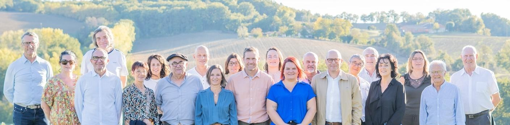

de gauche à droite : Patrick FOURNIOLS, Laurence QUERCY, Eric LONGUEVILLE, Bertrand GUIRAL, Lydia DEFOSSE, Jessica VENERANDO, Joel MOURIAU, Pascal CABOS, Amélie GRANDMONTAGNE, Anaïs DEFOSSE, Stéphane FAU, Clémence ARHUIS, Anaïs COUJEAN, Denis TAISANT, Gilles MACCARINI, Sylvie ROUCHY, Pascal SIMEONE, Céline COSME, Laure BERROCAL, Serge LAYMOND, Jean-François CADERAS
Une équipe expérimentée, à l'écoute et proche du terrain
Notre équipe composée de 21 colistiers de tous âges, représentant diverses catégories socio-professionnelles est un groupe soudé, compétent et profondément enraciné dans la vie locale. Unie et déterminée, cette équipe porte un projet concret et ambitieux pour construire l'avenir de notre commune.
« Votre voix nous engage »
La liste se veut à l'écoute des habitants, ouverte au dialogue et résolument tournée vers l'action.
Notre ambition est claire : insuffler une nouvelle dynamique plus collaborative.
Nous souhaitons renforcer le lien social avec les habitants, les associations, l'école, les commerçants, les artisans, les agriculteurs, les entreprises et les professionnels de santé ; préserver la qualité de vie et mener des projets concrets et raisonnés pour améliorer le quotidien des Montpezataises et Montpezatais ; mettre en avant le magnifique patrimoine de notre village.
L'équipe MONTPEZAT AUTREMENT souhaite mettre son expérience et sa connaissance du territoire au service des habitants.
Transparence, Proximité et Action seront au coeur de notre démarche.
Chaque projet sera conduit avec rigueur, en s'appuyant sur les compétences présentes au sein de l'équipe, mais aussi sur des expertises extérieures lorsque nécessaire afin d'assurer des décisions justes, efficaces et respectueuses de l'argent public.
LES PILIERS DE NOTRE ENGAGEMENT
GESTION COMMUNALE RAISONNÉE
- Maîtriser le budget et garantir une gestion transparente
- Optimiser notre appartenance à la Communauté de Communes
- Instaurer une relation de confiance et de respect avec le personnel communal
VIE ÉCONOMIQUE & TOURISME DYNAMISÉS
- Soutenir durablement les commerces, artisans et agriculteurs locaux
- Encourager l'installation de nouveaux professionnels
- Redynamiser le centre-bourg, la place de la Mairie et le parc du presbytère
- Valoriser le patrimoine et développer le tourisme de proximité
SANTÉ & BIEN VIVRE GARANTIS
- Améliorer et pérenniser les services de santé
- Favoriser le bien vieillir au village
- Préserver la tranquillité et la sécurité du village
VIE ASSOCIATIVE & SPORTIVE ENCOURAGÉE
- Améliorer et adapter les équipements existants
- Soutenir les associations culturelles, sportives et sociales
ÉCOLOGIE & ENVIRONNEMENT
- Engager la rénovation énergétique des bâtiments publics
- Améliorer et rationaliser les points de collecte des déchets
ÉCOLE & JEUNESSE
- Aménager une aire de jeux pour les enfants
- Étudier la création d'une Maison d'Assistantes Maternelles (MAM)
- Soutenir les enseignants et le CLAN dans leurs missions éducatives et périscolaires
UNE DÉMARCHE PARTICIPATIVE
Rencontrons-nous ! Votre avis compte. Notre équipe échangera avec vous pour construire ce programme et le faire vivre, pour qu'il réponde réellement à vos attentes et à la réalité de Montpezat de Quercy.
Contactez-nous !
Email : montpezatautrement@gmail.com
Facebook/Instagram : Montpezat Autrement
Internet :http://www.montpezatautrement.com